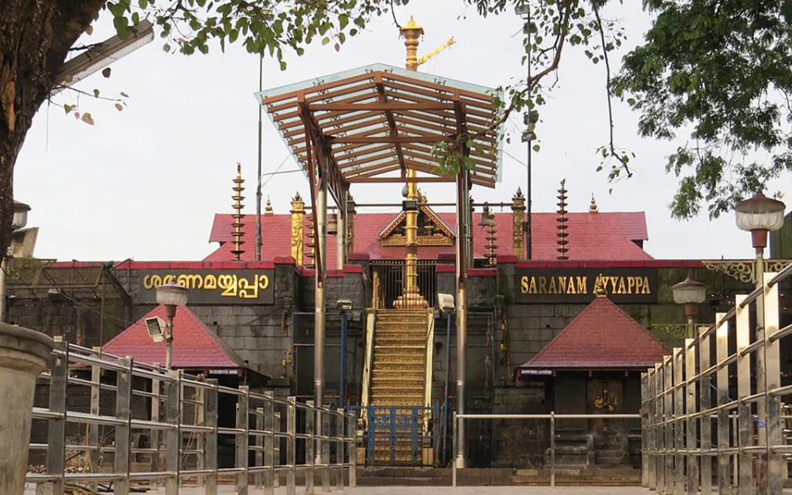
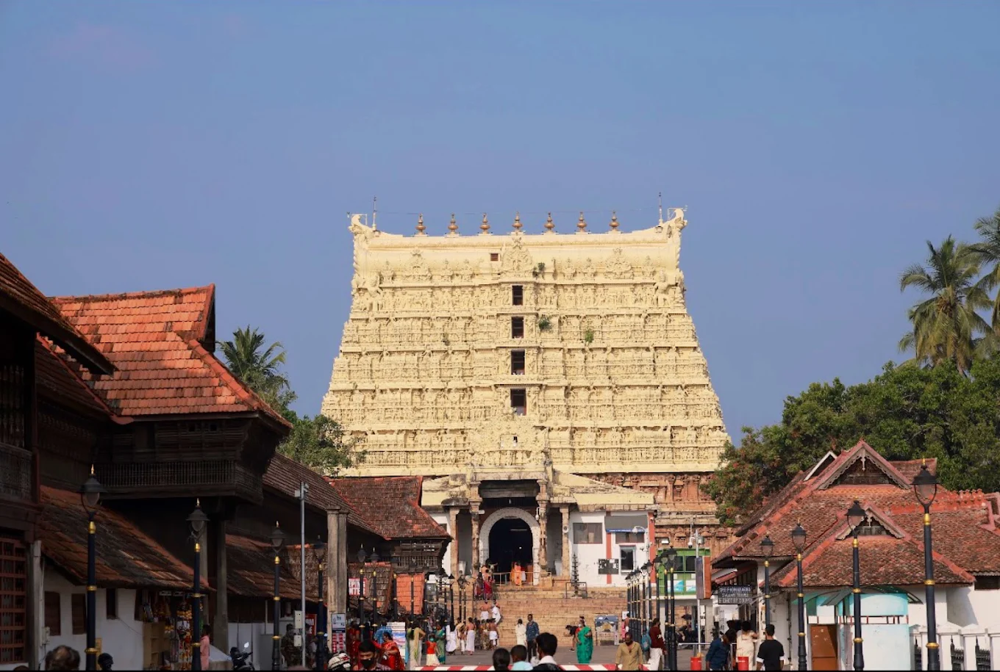
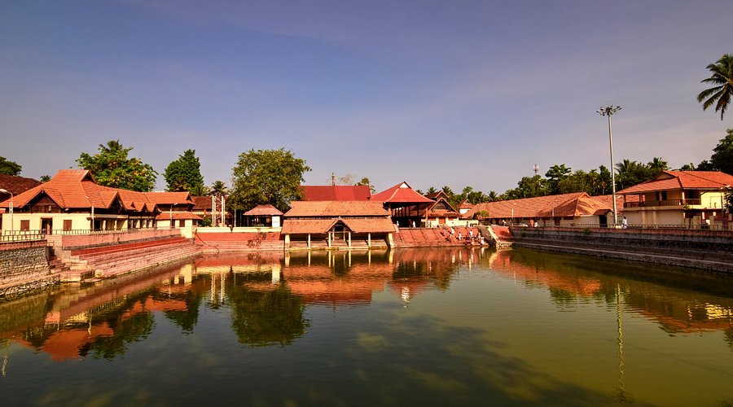
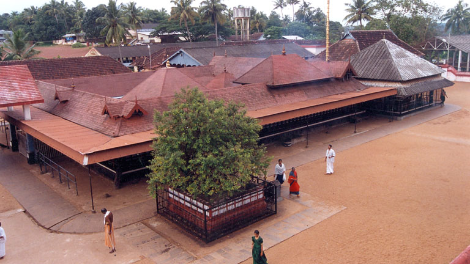

Temples and pilgrims in Kerala
Sabarimala Sree Ayyappa Temple and pilgrimage

Sabarimala Sree Ayyappa Temple, located in Pathanamthitta, Kerala, is a renowned hilltop shrine dedicated to Lord Ayyappa within the Periyar Tiger Reserve. Situated at 914 meters, it attracts 10–15 million annual pilgrims, requiring a 4km trek from Pamba. Open only during Mandalapooja, Makaravilakku, and Vishu, it promotes harmony, featuring the Vavar Nada shrine for Lord Ayyappa's friend, Vavar.
- Key Tourist & Pilgrimage Information:
- Location: Situated on Sabarimala hill at ~914m above sea level.
- Best Time to Visit (Pilgrimage Season): Mid-November to Mid-January (Mandalakalam and Makaravilakku festivals).
- Temple Opening Hours: The temple is open only during the first 5 days of every Malayalam month and for the yearly festival (April - Vishu).
- Access: Only accessible by foot. Major trekking paths start from Pamba (approx. 4 km) or the traditional route from Erumeli (40 km).
- Click here for more information.
Guruvayur Temple

Guruvayur Temple, located in Kerala, India, is a premier Hindu pilgrimage site dedicated to Lord Guruvayurappan (Vishnu in his four-armed form), often called "Bhuloka Vaikuntham" (Holy Abode of Vishnu on Earth). This 5,000-year-old temple is renowned for its traditional architecture, strict rituals, and a 70-foot gold-covered flagstaff.
- Key Visitor Information
- Location: Guruvayur, Thrissur District, Kerala.
- Temple Entry: Strictly for Hindus only.
- Dress Code: Men must wear a Dhoti (mundu) and Angavastram, with bare chests. Women must wear traditional attire like a Saree or Chudidhar.
- Timings: 3:00 AM – 1:30 PM & 4:30 PM – 10:00 PM.
- Best Time to Visit: Early morning for Nirmalya Darshanam or during special occasions like Vrichika Ekadasi.
- Special Darshan/Offerings: Special darshan tickets are available, and Thulabharam is a popular offering.
- Nearby Attractions: Mammiyoor Shiva Temple, Punnathur Kotta Elephant Sanctuary, and Chavakkad Beach.
- Click here for more details.
The Sree Padmanabhaswamy Temple in Thiruvananthapuram

The Sree Padmanabhaswamy Temple in Thiruvananthapuram, Kerala, is a historic,16th-century shrine dedicated to Lord Vishnu, renowned as the world's richest temple. Known for its immense, largely unexplored treasures, the temple features a unique blend of Kerala and Dravidian architecture, with a 100-foot seven-tier Gopuram, and features the deity in a, 18-foot "Anantha Shayanam" (eternal yogic sleep) posture.
- Visitor Information:
- Location: Located at the heart of Thiruvananthapuram city.
- Entry: Only Hindus are permitted inside the temple.
- Dress Code: Strict traditional attire is required. Men must wear a Dhoti (mundu) without a shirt, and women must wear a Saree or skirt.
- Best Time to Visit: Early morning hours offer a calmer experience, whereas weekends and festivals are usually crowded.
- Click here for more details.
The Ambalapuzha Sree Krishna Swamy Temple

The Ambalapuzha Sree Krishna Swamy Temple is a historic 15th-century Hindu temple in Kerala’s Alappuzha district, renowned for its Kerala-style architecture and the deity Lord Krishna in his Parthasarathi (charioteer) form. It is most famous for its sweet milk porridge offering, Ambalapuzha Palpayasam, and for being the birthplace of the art form Ottanthullal.
- Key Visitor Information
- Location: Ambalapuzha, Alappuzha district, Kerala, less than an hour's drive from Alleppey town.
- Famous Offering: Ambalapuzha Pal Payasam, a sweet milk porridge, which can be purchased.
- Dress Code: Traditional attire is mandatory for entering the inner sanctuary (Garbhagriha). Women should wear sarees or salwars, men should wear dhotis or trousers (typically shirtless for men to enter the inner sanctum).
- Best Time to Visit: Early morning (before 9 AM) for a calm experience. The temple is known for its serene atmosphere.
- Click here for details.
The Chottanikkara Temple, located in Ernakulam

The Chottanikkara Temple, located in Ernakulam, Kerala, is a famous 10th-century Hindu shrine dedicated to Goddess Bhagavathy (Rajarajeswari). Renowned for healing mental illnesses, the deity is worshipped in three forms: Saraswathy (morning), Lakshmi (noon), and Durga (evening). The temple, featuring impressive antique architecture, is a major pilgrimage site.
- Essential Visitor Information
- Location: Chottanikkara, Ernakulam District, Kerala, approx. 17 km from Ernakulam.
- Best Time to Visit: September to March (cooler months), specifically during the Makam Thozhal festival in February/March.
- Temple Timing: Opens early morning (approx. 4:00 AM) and stays open until evening with a break around 12:00 PM to 4:00 PM, though times vary.
- Dress Code: Traditional attire required. Women: Saree/Salwar Kameez. Men: Dhoti/Trousers (no shirts allowed in the main shrine area).
- Key Rituals: The Keezhkkavu temple conducts specialized evening rituals for mental peace.
- Accessibility: Wheelchair-accessible entrance and parking are available.
- Link to official website.